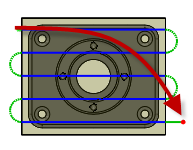

<div id="fromOtherSide"><p>Specifica che il percorso utensile inizia sull'altro lato della parte.</p>
<table class="tipTable" cellspacing="10">
<tr>
<td><center></center></td>
<td><center></center></td>
</tr><tr>
<td><center><p><b>Non selezionato</b></p></center></td>
<td><center><p><b>Selezionato</b></p></center></td>
</tr></table>
</div>